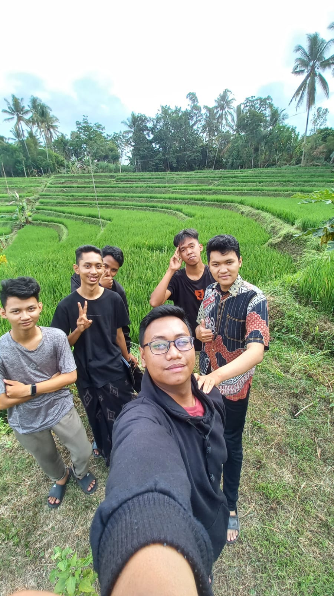
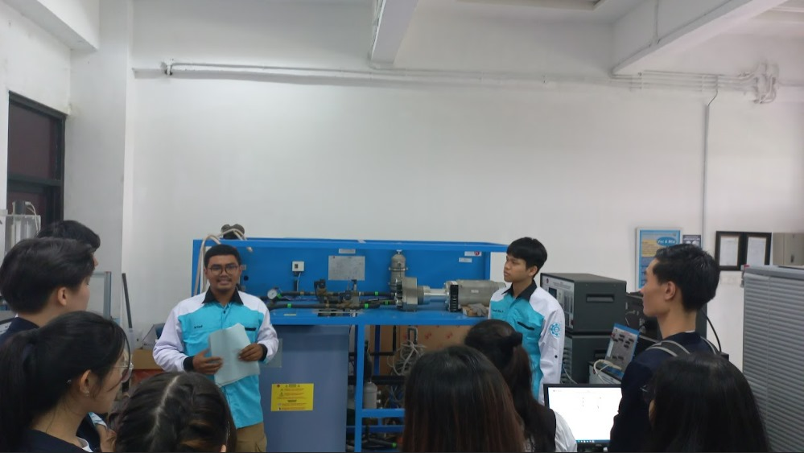

Laboratorium SCADA PENS:
Gelar Pelatihan Arduino Menggunakan Wokwi untuk Meningkatkan Keterampilan Mahasiswa

Mahasiswa Baru 2023 PENS Kunjungi Laboratorium SCADA:
Menyusuri Teknologi Canggih di Dunia Sistem Kontrol dan Automasi

Laboratorium SCADA PENS Ikuti Lomba PLN ICE 2023:
Bersaing Ketat untuk Meningkatkan Ekonomi di Desa Ngerendeng, Blitar

Kolaborasi Internasional:
Mahasiswa Pertukaran Pelajar dari ITE College West, Singapura, Tur Laboratorium SCADA di PENS